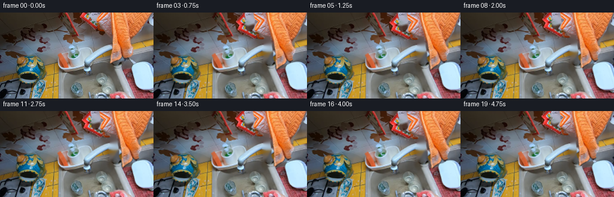
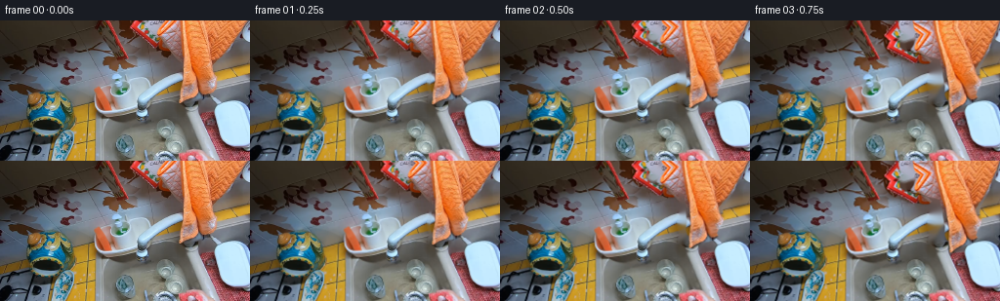

CODING AGENTS AS PIXEL WORLD MODELS
traex/GPT-6.1-Sol · common50_0027
点击播放 · 原生 RGB 像素
逐轮保存的候选
回放视频、检查图与代码变化。
每份候选均可单独播放。实际图片检查记录在下方工具轨迹中。
候选 01播放与检查图
点击播放 · 原生 RGB 像素


展开代码变化
--- 上一保存版本
+++ 本次保存版本
@@ -0,0 +1,151 @@
+"""Deterministic local RGB animation of a sponge washing a held glass.
+
+Only the supplied first frame is used as an appearance source. The animation
+uses subpixel layered warps, an articulated wrist and restrained soap glints.
+"""
+from pathlib import Path
+import math
+import cv2
+import numpy as np
+from PIL import Image
+import artifact_io
+
+ROOT = Path(__file__).resolve().parent
+W, H = 256, 144
+S = 3
+
+def polygon(points, width=W, height=H, scale=S, origin=(0,0)):
+ mask = np.zeros((height*scale, width*scale), np.uint8)
+ pts = np.rint((np.asarray(points, np.float32)-np.asarray(origin))*scale).astype(np.int32)
+ cv2.fillPoly(mask, [pts], 255, lineType=cv2.LINE_AA)
+ return mask
+
+def smoothstep(x):
+ x=np.clip(x,0,1)
+ return x*x*(3-2*x)
+
+def make_video():
+ original = np.asarray(Image.open(ROOT/'first_frame.png').convert('RGB'))
+ assert original.shape == (H,W,3)
+ # The visible forearm, palm and the fingers curling around the sponge.
+ hand_outline = [(166,-45),(295,-45),(295,1),(255,5),(249,11),
+ (246,17),(241,22),(237,28),(233,33),(229,37),(225,42),
+ (222,47),(221,51),(222,56),(220,62),(215,68),(213,72),
+ (214,75),(210,78),(204,80),(198,80),(192,82),(187,85),
+ (183,84),(183,80),(184,77),(184,73),(183,70),(182,66),
+ (183,61),(184,57),(184,51),(184,46),(185,40),(184,34),
+ (184,29),(181,27),(176,25),(171,22),(165,19),(158,16),
+ (157,13),(161,9),(164,4)]
+ sponge_outline = [(133,-35),(150,-35),(149,0),(146,5),(146,9),
+ (150,13),(156,17),(161,19),(166,21),(172,25),(175,29),
+ (172,31),(166,30),(162,28),(155,27),(149,23),(144,20),
+ (139,17),(135,13),(132,8),(131,4)]
+ mhand = polygon(hand_outline)
+ msponge = polygon(sponge_outline)
+ mask_hi = np.maximum(mhand,msponge)
+ mask = cv2.resize(mask_hi,(W,H),interpolation=cv2.INTER_AREA)
+ # Repair only potentially uncovered pixels; the arm covers almost all of
+ # this fill throughout. The narrow fill beside the glass retains nearby
+ # steel/glass color and avoids leaving a duplicate hand in the sink.
+ remove = cv2.dilate((mask>60).astype(np.uint8)*255,
+ cv2.getStructuringElement(cv2.MORPH_ELLIPSE,(3,3)))
+ background = cv2.inpaint(original,remove,4,cv2.INPAINT_TELEA).astype(np.float32)
+ yy,xx=np.mgrid[0:H,0:W].astype(np.float32)
+ # Continuation outside the camera's border keeps the arm attached to the
+ # top-right edge during the downward wrist stroke.
+ pad=48
+ ext=cv2.copyMakeBorder(original,pad,pad,pad,pad,cv2.BORDER_REFLECT_101)
+ ext_hi=cv2.resize(ext,((W+2*pad)*S,(H+2*pad)*S),interpolation=cv2.INTER_CUBIC).astype(np.float32)
+ ext_mask=np.maximum(polygon(hand_outline,W+2*pad,H+2*pad,S,(-pad,-pad)),
+ polygon(sponge_outline,W+2*pad,H+2*pad,S,(-pad,-pad))).astype(np.float32)/255
+ ext_mask=cv2.GaussianBlur(ext_mask,(0,0),.5*S)
+ spmask=polygon(sponge_outline,W+2*pad,H+2*pad,S,(-pad,-pad)).astype(np.float32)/255
+ # Porous red material is already in the source; preserve its shading.
+ material=(ext_hi[:,:,0]>ext_hi[:,:,1]*1.45)&(ext_hi[:,:,2]>ext_hi[:,:,1]*.62)
+ spmask*=material
+ spmask=cv2.GaussianBlur(spmask,(0,0),.4*S)
+ # Piecewise glass motion is damped near the sink so fixtures stay fixed.
+ glass_weight=np.exp(-((xx-129)/37)**4-((yy-43)/60)**4)
+ glass_weight*=1-smoothstep((yy-89)/17)
+ holding_weight=np.exp(-((xx-100)/16)**4-((yy-87)/23)**4)
+ rng=np.random.default_rng(527)
+ # Very small clusters, rather than an opaque painted patch of foam.
+ bubbles=[]
+ for _ in range(34):
+ bx=161+rng.normal(0,4.0)
+ by=24+rng.normal(0,3.5)
+ radius=rng.uniform(.28,.88)
+ strength=rng.uniform(.14,.43)
+ bubbles.append((bx,by,radius,strength,rng.uniform(0,2*np.pi)))
+ frames=[original.copy()]
+ previous=None
+ for i in range(1,20):
+ t=i/4
+ entry=smoothstep(t/.85)
+ # Three small overlapping rubbing strokes over five seconds. The
+ # return is deliberately faster, as in a real wrist scrub.
+ phase=2*np.pi*(t-.65)/1.45
+ scrub=.5+.5*np.sin(phase)
+ angle=entry*(7.8+5.6*scrub)
+ theta=-np.deg2rad(angle)
+ pivot=np.array([236.,-15.],np.float32)
+ rot=np.array([[np.cos(theta),-np.sin(theta)],[np.sin(theta),np.cos(theta)]],np.float32)
+ trans=np.array([entry*(.45*np.sin(phase+.6)),entry*(1.1+.8*np.sin(phase))],np.float32)
+ offset=pivot-rot@pivot+trans
+ # Tiny counter-motion of the held glass and the supporting fingers.
+ gx=entry*(.7*np.sin(phase+.9)+.25*np.sin(t*1.7))
+ gy=entry*(.45*np.sin(phase+.4))
+ mapx=xx-glass_weight*gx-holding_weight*.4*np.sin(phase)
+ mapy=yy-glass_weight*gy-holding_weight*.35*np.sin(phase+.5)
+ scene=cv2.remap(background,mapx.astype(np.float32),mapy.astype(np.float32),cv2.INTER_CUBIC,borderMode=cv2.BORDER_REFLECT_101)
+ scene_hi=cv2.resize(scene,(W*S,H*S),interpolation=cv2.INTER_CUBIC)
+ # Source coordinates include the extra off-screen pixels.
+ affine=np.c_[rot,(offset-rot@np.array([pad,pad],np.float32))*S].astype(np.float32)
+ color=ext_hi.copy()
+ color[:,:,0]+=spmask*entry*8
+ color[:,:,1]-=spmask*entry*2
+ color=np.clip(color,0,255)
+ # Alpha-premultiplication eliminates any dark/colored cut-out fringe.
+ alpha=cv2.warpAffine(ext_mask,affine,(W*S,H*S),flags=cv2.INTER_LINEAR,borderMode=cv2.BORDER_CONSTANT)
+ fg=cv2.warpAffine(color*ext_mask[:,:,None],affine,(W*S,H*S),flags=cv2.INTER_CUBIC,borderMode=cv2.BORDER_CONSTANT)
+ scene_hi=scene_hi*(1-alpha[:,:,None])+fg
+ # Soap collects along the compressed sponge edge, exposing the glass
+ # beneath. Some glints stick to the glass on the upward return.
+ foam=np.zeros((H*S,W*S),np.float32)
+ amount=smoothstep((t-.45)/1.4)*(.68+.32*scrub)
+ for bx,by,radius,strength,phi in bubbles:
+ p=rot@np.array([bx,by],np.float32)+offset
+ p+=np.array([.28*np.sin(t*2+phi),.22*np.cos(t*2+phi)])
+ cv2.circle(foam,tuple(np.rint(p*S).astype(int)),max(1,round(radius*S)),
+ float(strength*amount),-1,lineType=cv2.LINE_AA)
+ foam=cv2.GaussianBlur(foam,(0,0),.28*S)
+ soap=np.array([211.,221.,224.],np.float32)
+ scene_hi=scene_hi*(1-foam[:,:,None])+soap*foam[:,:,None]
+ # Faint moving water glints across the transparent glass, not an
+ # invented faucet or large geometric overlay.
+ wet=np.zeros((H*S,W*S),np.float32)
+ for k in range(5):
+ life=(t*.67+k*.23)%1
+ px=143+3.6*k+.65*np.sin(t*1.9+k)
+ py=37+life*34
+ cv2.ellipse(wet,(round(px*S),round(py*S)),(1,2),-22,0,360,
+ float(.11*entry*(1-life)), -1,cv2.LINE_AA)
+ wet=cv2.GaussianBlur(wet,(0,0),.25*S)
+ # Avoid droplets over the hand: their depth is behind the foreground.
+ wet*=(1-alpha)
+ scene_hi=scene_hi*(1-wet[:,:,None])+np.array([212,224,230],np.float32)*wet[:,:,None]
+ frame=cv2.resize(scene_hi,(W,H),interpolation=cv2.INTER_AREA)
+ # Sub-pixel egocentric head sway. Keeps the framing and fixtures stable.
+ camx=entry*(.42*np.sin(t*1.25)+.12*np.sin(t*3.9))
+ camy=entry*(.30*np.sin(t*1.5)-.14*np.sin(t*2.7))
+ frame=cv2.warpAffine(frame,np.array([[1,0,camx],[0,1,camy]],np.float32),(W,H),
+ flags=cv2.INTER_CUBIC,borderMode=cv2.BORDER_REFLECT_101)
+ frames.append(np.clip(np.rint(frame),0,255).astype(np.uint8))
+ return np.stack(frames)
+
+if __name__=='__main__':
+ frames=make_video()
+ assert frames.shape==(20,144,256,3) and frames.dtype==np.uint8
+ assert np.array_equal(frames[0],np.array(Image.open(ROOT/'first_frame.png').convert('RGB')))
+ artifact_io.save(frames,ROOT)
+ print('Saved 20 RGB frames, 256x144 at 4 fps.')
可观测工具轨迹
实际执行的命令与返回图片。
命令 1exit 0
/bin/bash -lc 'ls -la && cat prompt.txt && cat GENERATION_RULES.md'
命令 2exit 0
/bin/bash -lc "cat task_spec.json && cat artifact_io.py && python - <<'PY'
from PIL import Image
import numpy as np
im=Image.open('first_frame.png');print(im.size)
a=np.asarray(im);print(a.shape)
# sample color blocks encoded by nearest coarse color
colors=np.array([[20,20,20],[65,65,65],[115,115,115],[170,170,170],[220,220,220],[130,60,35],[185,115,70],[225,160,110],[180,35,30],[70,110,130],[125,150,155],[160,130,85]])
chars=' .oO#bstRBCL'
x=np.array(im.resize((64,36)))
d=((x[:,:,None,:].astype(float)-colors[None,None,:,:])**2).sum(3)
for row in np.argmin(d,2):print(''.join(chars[i] for i in row))
PY"命令 3exit 0
/bin/bash -lc "python - <<'PY'
import numpy as np
from PIL import Image
from scipy.cluster.vq import kmeans2
im=np.array(Image.open('first_frame.png'))
c,l=kmeans2(im.reshape(-1,3).astype(float),20,minit='++',seed=8)
for i in range(20):
y,x=np.where(l.reshape(144,256)==i)
print(chr(65+i),np.round(c[i]).astype(int).tolist(),len(x),'bbox', (min(x),min(y),max(x),max(y)), 'center',round(x.mean(),1),round(y.mean(),1))
z=np.array(Image.open('first_frame.png').resize((128,72)))
d=((z[:,:,None,:].astype(float)-c[None,None,:,:])**2).sum(3)
print(' '+''.join(str(i//10%10) for i in range(128)))
print(' '+''.join(str(i%10) for i in range(128)))
for j,r in enumerate(np.argmin(d,2)):print(f'{j*2:3} '+''.join(chr(65+i) for i in r))
PY"命令 4exit 0
/bin/bash -lc "python - <<'PY'
from PIL import Image
import numpy as np
im=np.array(Image.open('first_frame.png')).astype(float)
for y in range(0,144,5):
a=im[y];r,g,b=a.T
skin=(r>g*1.2)&(g>b*1.12)&(r>120)&(b>40)&(g>70)
yell=(r>g*1.1)&(g>b*1.6)&(r>140)&(g>100)
red=(r>g*1.65)&(r>b*1.9)&(r>120)
def ranges(a):
z=np.flatnonzero(a);return [(int(x[0]),int(x[-1])) for x in np.split(z,np.where(np.diff(z)>1)[0]+1) if len(x)>=2]
print(y,'skin',ranges(skin),'yellow',ranges(yell),'red',ranges(red))
print('\\nRGB grid top region x120:256 y0:100 every 8px')
for y in range(0,100,8):
print(y,[(x,tuple(im[y:y+3,x:x+3].mean((0,1)).astype(int))) for x in range(120,256,8)])
PY"命令 5exit 0
/bin/bash -lc "python - <<'PY'
from PIL import Image
import numpy as np
im=np.array(Image.open('first_frame.png')).astype(float)
# luminance as ASCII
z=im @ np.array([.299,.587,.114]);z=np.array(Image.fromarray(z.astype('uint8')).resize((128,72)))
p=' .,:;irsXA253hMHGS#9B&@'
print('Luminance')
for y,r in enumerate(z):print(f'{y*2:3} '+''.join(p[min(len(p)-1,int(a)/256*len(p).__len__())] if False else p[min(len(p)-1,int(a)*len(p)//256)] for a in r))
print('\\nRed and skin components top, 2x2 avg.')
a=np.array(Image.fromarray(im.astype('uint8')).resize((128,72))).astype(float)
for y in range(50):
row=''
for r,g,b in a[y,45:128]:
if r>1.5*g and b>g*.8 and r>100: c='R'
elif r>g*1.3 and g>b*1.4 and r>150:c='S'
elif r>g*1.15 and g>b*1.4 and r>140:c='Y'
elif b>r*1.1 and b>170:c='C'
elif min(r,g,b)>170:c='W'
elif r>g*1.3 and r>100:c='r'
else: c=' .:-='[int(max(0,min(4,(r+g+b)/3//50)))]
row+=c
print(f'{y*2:3} '+row)
PY"命令 6exit 0
/bin/bash -lc "python - <<'PY'
import numpy as np
from PIL import Image
im=np.array(Image.open('first_frame.png')).astype(float)
# nearest palette aimed anatomical boundaries
cols=np.array([[44,34,24],[75,65,58],[101,92,86],[130,126,125],[170,164,167],[185,208,231],[135,171,199],[184,70,65],[126,58,49],[225,128,65],[246,161,103],[175,107,75],[180,141,38],[4,97,144]])
letters=' .:oWCcRrSPsYB'
for bounds in [(100,0,220,94),(55,65,135,144)]:
x0,y0,x1,y1=bounds
a=im[y0:y1,x0:x1]
# 1 pix x and 1 pix y
d=((a[:,:,None]-cols)**2).sum(3)
print(bounds,letters)
print(' '+''.join(str((x0+i)//10%10) for i in range(x1-x0)))
print(' '+''.join(str((x0+i)%10) for i in range(x1-x0)))
for y,r in enumerate(np.argmin(d,2)):print(f'{y+y0:3} '+''.join(letters[i] for i in r))
PY"命令 7exit 0
/bin/bash -lc "python - <<'PY'
import cv2,scipy
print('cv2',cv2.__version__)
PY"命令 8exit 0
/bin/bash -lc "python - <<'PY'
from PIL import Image
import numpy as np
im=np.array(Image.open('first_frame.png')).astype(float)
# foreground detail numeric sample
for y in range(70,144,5):
print(y, [(x,tuple(im[y,x].astype(int))) for x in range(75,122,4)])
# hue nearest segments foreground with hue skin vs sponge and glass distinction
for y in range(60,104):
row=''
for x in range(65,191):
r,g,b=im[y,x]
if r>g*1.4 and r>b*1.3 and r>115: c='r' if b>g*.65 else 's'
elif r>g*1.15 and g>b*1.5 and r>130: c='y'
elif b>r*1.03 and b>170:c='G' if b>235 else 'g'
elif min(r,g,b)>165: c='w'
elif b>r*1.05 and b>150:c='c'
elif g>r*1.1 and b>g*1.1:c='B'
elif max(r,g,b)-min(r,g,b)<30:c=' .:=#'[int(min(4,(r+g+b)/3//50))]
else:c='-'
row+=c
print(f'{y:3} '+row)
PY"命令 9exit 2
/bin/bash -lc "cat > generate.py <<'PY'
\"\"\"Deterministic local RGB animation of a sponge washing a held glass.
Only the supplied first frame is used as an appearance source. The animation
uses subpixel layered warps, an articulated wrist and restrained soap glints.
\"\"\"
from pathlib import Path
import math
import cv2
import numpy as np
from PIL import Image
import artifact_io
ROOT = Path(__file__).resolve().parent
W, H = 256, 144
S = 3
def polygon(points, width=W, height=H, scale=S, origin=(0,0)):
mask = np.zeros((height*scale, width*scale), np.uint8)
pts = np.rint((np.asarray(points, np.float32)-np.asarray(origin))*scale).astype(np.int32)
cv2.fillPoly(mask, [pts], 255, lineType=cv2.LINE_AA)
return mask
def smoothstep(x):
x=np.clip(x,0,1)
return x*x*(3-2*x)
def make_video():
original = np.asarray(Image.open(ROOT/'first_frame.png').convert('RGB'))
assert original.shape == (H,W,3)
# The visible forearm, palm and the fingers curling around the sponge.
hand_outline = [(166,-45),(295,-45),(295,1),(255,5),(249,11),
(246,17),(241,22),(237,28),(233,33),(229,37),(225,42),
(222,47),(221,51),(222,56),(220,62),(215,68),(213,72),
(214,75),(210,78),(204,80),(198,80),(192,82),(187,85),
(183,84),(183,80),(184,77),(184,73),(183,70),(182,66),
(183,61),(184,57),(184,51),(184,46),(185,40),(184,34),
(184,29),(181,27),(176,25),(171,22),(165,19),(158,16),
(157,13),(161,9),(164,4)]
sponge_outline = [(133,-35),(150,-35),(149,0),(146,5),(146,9),
(150,13),(156,17),(161,19),(166,21),(172,25),(175,29),
(172,31),(166,30),(162,28),(155,27),(149,23),(144,20),
(139,17),(135,13),(132,8),(131,4)]
mhand = polygon(hand_outline)
msponge = polygon(sponge_outline)
mask_hi = np.maximum(mhand,msponge)
mask = cv2.resize(mask_hi,(W,H),interpolation=cv2.INTER_AREA)
# Repair only potentially uncovered pixels; the arm covers almost all of
# this fill throughout. The narrow fill beside the glass retains nearby
# steel/glass color and avoids leaving a duplicate hand in the sink.
remove = cv2.dilate((mask>60).astype(np.uint8)*255,
cv2.getStructuringElement(cv2.MORPH_ELLIPSE,(3,3)))
background = cv2.inpaint(original,remove,4,cv2.INPAINT_TELEA).astype(np.float32)
yy,xx=np.mgrid[0:H,0:W].astype(np.float32)
# Continuation outside the camera's border keeps the arm attached to the
# top-right edge during the downward wrist stroke.
pad=48
ext=cv2.copyMakeBorder(original,pad,pad,pad,pad,cv2.BORDER_REFLECT_101)
ext_hi=cv2.resize(ext,((W+2*pad)*S,(H+2*pad)*S),interpolation=cv2.INTER_CUBIC).astype(np.float32)
ext_mask=np.maximum(polygon(hand_outline,W+2*pad,H+2*pad,S,(-pad,-pad)),
polygon(sponge_outline,W+2*pad,H+2*pad,S,(-pad,-pad))).astype(np.float32)/255
ext_mask=cv2.GaussianBlur(ext_mask,(0,0),.5*S)
spmask=polygon(sponge_outline,W+2*pad,H+2*pad,S,(-pad,-pad)).astype(np.float32)/255
# Porous red material is already in the source; preserve its shading.
material=(ext_hi[:,:,0]>ext_hi[:,:,1]*1.45)&(ext_hi[:,:,2]>ext_hi[:,:,1]*.62)
spmask*=material
spmask=cv2.GaussianBlur(spmask,(0,0),.4*S)
# Piecewise glass motion is damped near the sink so fixtures stay fixed.
glass_weight=np.exp(-((xx-129)/37)**4-((yy-43)/60)**4)
glass_weight*=1-smoothstep((yy-89)/17)
holding_weight=np.exp(-((xx-100)/16)**4-((yy-87)/23)**4)
rng=np.random.default_rng(527)
# Very small clusters, rather than an opaque painted patch of foam.
bubbles=[]
for _ in range(34):
bx=161+rng.normal(0,4.0)
by=24+rng.normal(0,3.5)
radius=rng.uniform(.28,.88)
strength=rng.uniform(.14,.43)
bubbles.append((bx,by,radius,strength,rng.uniform(0,2*np.pi)))
frames=[original.copy()]
previous=None
for i in range(1,20):
t=i/4
entry=smoothstep(t/.85)
# Three small overlapping rubbing strokes over five seconds. The
# return is deliberately faster, as in a real wrist scrub.
phase=2*np.pi*(t-.65)/1.45
scrub=.5+.5*np.sin(phase)
angle=entry*(7.8+5.6*scrub)
theta=-np.deg2rad(angle)
pivot=np.array([236.,-15.],np.float32)
rot=np.array([[np.cos(theta),-np.sin(theta)],[np.sin(theta),np.cos(theta)]],np.float32)
trans=np.array([entry*(.45*np.sin(phase+.6)),entry*(1.1+.8*np.sin(phase))],np.float32)
offset=pivot-rot@pivot+trans
# Tiny counter-motion of the held glass and the supporting fingers.
gx=entry*(.7*np.sin(phase+.9)+.25*np.sin(t*1.7))
gy=entry*(.45*np.sin(phase+.4))
mapx=xx-glass_weight*gx-holding_weight*.4*np.sin(phase)
mapy=yy-glass_weight*gy-holding_weight*.35*np.sin(phase+.5)
scene=cv2.remap(background,mapx,mapy,cv2.INTER_CUBIC,borderMode=cv2.BORDER_REFLECT_101)
scene_hi=cv2.resize(scene,(W*S,H*S),interpolation=cv2.INTER_CUBIC)
# Source coordinates include the extra off-screen pixels.
affine=np.c_[rot,(offset-rot@np.array([pad,pad],np.float32))*S].astype(np.float32)
color=ext_hi.copy()
color[:,:,0]+=spmask*entry*8
color[:,:,1]-=spmask*entry*2
color=np.clip(color,0,255)
# Alpha-premultiplication eliminates any dark/colored cut-out fringe.
alpha=cv2.warpAffine(ext_mask,affine,(W*S,H*S),flags=cv2.INTER_LINEAR,borderMode=cv2.BORDER_CONSTANT)
fg=cv2.warpAffine(color*ext_mask[:,:,None],affine,(W*S,H*S),flags=cv2.INTER_CUBIC,borderMode=cv2.BORDER_CONSTANT)
scene_hi=scene_hi*(1-alpha[:,:,None])+fg
# Soap collects along the compressed sponge edge, exposing the glass
# beneath. Some glints stick to the glass on the upward return.
foam=np.zeros((H*S,W*S),np.float32)
amount=smoothstep((t-.45)/1.4)*(.68+.32*scrub)
for bx,by,radius,strength,phi in bubbles:
p=rot@np.array([bx,by],np.float32)+offset
p+=np.array([.28*np.sin(t*2+phi),.22*np.cos(t*2+phi)])
cv2.circle(foam,tuple(np.rint(p*S).astype(int)),max(1,round(radius*S)),
float(strength*amount),-1,lineType=cv2.LINE_AA)
foam=cv2.GaussianBlur(foam,(0,0),.28*S)
soap=np.array([211.,221.,224.],np.float32)
scene_hi=scene_hi*(1-foam[:,:,None])+soap*foam[:,:,None]
# Faint moving water glints across the transparent glass, not an
# invented faucet or large geometric overlay.
wet=np.zeros((H*S,W*S),np.float32)
for k in range(5):
life=(t*.67+k*.23)%1
px=143+3.6*k+.65*np.sin(t*1.9+k)
py=37+life*34
cv2.ellipse(wet,(round(px*S),round(py*S)),(1,2),-22,0,360,
float(.11*entry*(1-life)), -1,cv2.LINE_AA)
wet=cv2.GaussianBlur(wet,(0,0),.25*S)
# Avoid droplets over the hand: their depth is behind the foreground.
wet*=(1-alpha)
scene_hi=scene_hi*(1-wet[:,:,None])+np.array([212,224,230],np.float32)*wet[:,:,None]
frame=cv2.resize(scene_hi,(W,H),interpolation=cv2.INTER_AREA)
# Sub-pixel egocentric head sway. Keeps the framing and fixtures stable.
camx=entry*(.42*np.sin(t*1.25)+.12*np.sin(t*3.9))
camy=entry*(.30*np.sin(t*1.5)-.14*np.sin(t*2.7))
frame=cv2.warpAffine(frame,np.array([[1,0,camx],[0,1,camy]],np.float32),(W,H),
flags=cv2.INTER_CUBIC,borderMode=cv2.BORDER_REFLECT_101)
frames.append(np.clip(np.rint(frame),0,255).astype(np.uint8))
return np.stack(frames)
if __name__=='__main__':
frames=make_video()
assert frames.shape==(20,144,256,3) and frames.dtype==np.uint8
assert np.array_equal(frames[0],np.array(Image.open(ROOT/'first_frame.png').convert('RGB')))
artifact_io.save(frames,ROOT)
print('Saved 20 RGB frames, 256x144 at 4 fps.')
PY
python generate.py
ls -lh pixels.npz index.html inspection.png transition_check.png frames/00.png frames/19.png"命令 10exit 0
/bin/bash -lc "python - <<'PY'
p='generate.py'
s=open(p).read().replace('scene=cv2.remap(background,mapx,mapy,cv2.INTER_CUBIC','scene=cv2.remap(background,mapx.astype(np.float32),mapy.astype(np.float32),cv2.INTER_CUBIC')
open(p,'w').write(s)
PY
python generate.py
ls -lh pixels.npz index.html inspection.png transition_check.png frames/00.png frames/19.png"命令 11exit 0
/bin/bash -lc "python - <<'PY'
import numpy as np
from PIL import Image
from pathlib import Path
p=np.load('pixels.npz')['pixels']
first=np.array(Image.open('first_frame.png').convert('RGB'))
f0=np.array(Image.open('frames/00.png'))
assert p.shape==(144,256,20)
assert np.array_equal(first,f0)
for i in [1,3,6,10,14,19]:
f=np.array(Image.open(f'frames/{i:02}.png'))
d=np.abs(f.astype(float)-np.array(Image.open(f'frames/{i-1:02}.png')).astype(float))
print(i,'successive mean difference',round(d.mean(),2),'rgb range',int(f.min()),int(f.max()))
assert len(list(Path('frames').glob('*.png')))==20
print('Artifacts verified; frame 00 is pixel-identical.')
PY"保存候选 1 份；完成命令 11 次；可验证图片返回 0 张。原始 API 响应与完整日志保留在本地。